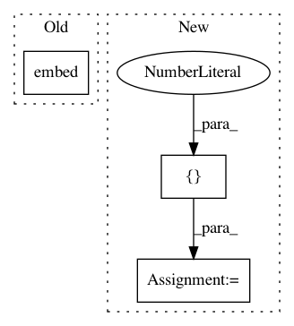

b5f576591e59ea7ca550cd51a08f96d37eb0ebf3,tests/test_losses.py,,test_smooth_l1_loss,#,7
Before Change
loss = keras.backend.eval(loss)
import IPython
IPython.embed()
After Change
def test_smooth_l1_loss():
y_true = numpy.zeros((1, 4, 4))
y_pred = numpy.array([[[0, 0, 0, 0], [1, 0, 0, 1], [0, 0.1, 0.5, 0.5], [0, 0, 0, 2]]])
loss = keras_rcnn.backend.smooth_l1_loss(y_true, y_pred)
loss = keras.backend.eval(loss)
In pattern: SUPERPATTERN
Frequency: 3
Non-data size: 3
Instances
Project Name: broadinstitute/keras-rcnn
Commit Name: b5f576591e59ea7ca550cd51a08f96d37eb0ebf3
Time: 2017-08-18
Author: jyhung@broadinstitute.org
File Name: tests/test_losses.py
Class Name:
Method Name: test_smooth_l1_loss
Project Name: pyannote/pyannote-audio
Commit Name: d6b449edcbdaf559807aaff6bd3234f47134e303
Time: 2017-05-11
Author: bredin@limsi.fr
File Name: pyannote/audio/embedding/approaches/center_loss.py
Class Name: CenterLoss
Method Name: loss_and_grad
Project Name: dpressel/mead-baseline
Commit Name: 6f46288188d2124d0712187b9d4b2d9d105b5c4d
Time: 2019-02-13
Author: dpressel@gmail.com
File Name: python/baseline/tf/embeddings.py
Class Name: LookupTableEmbeddings
Method Name: encode